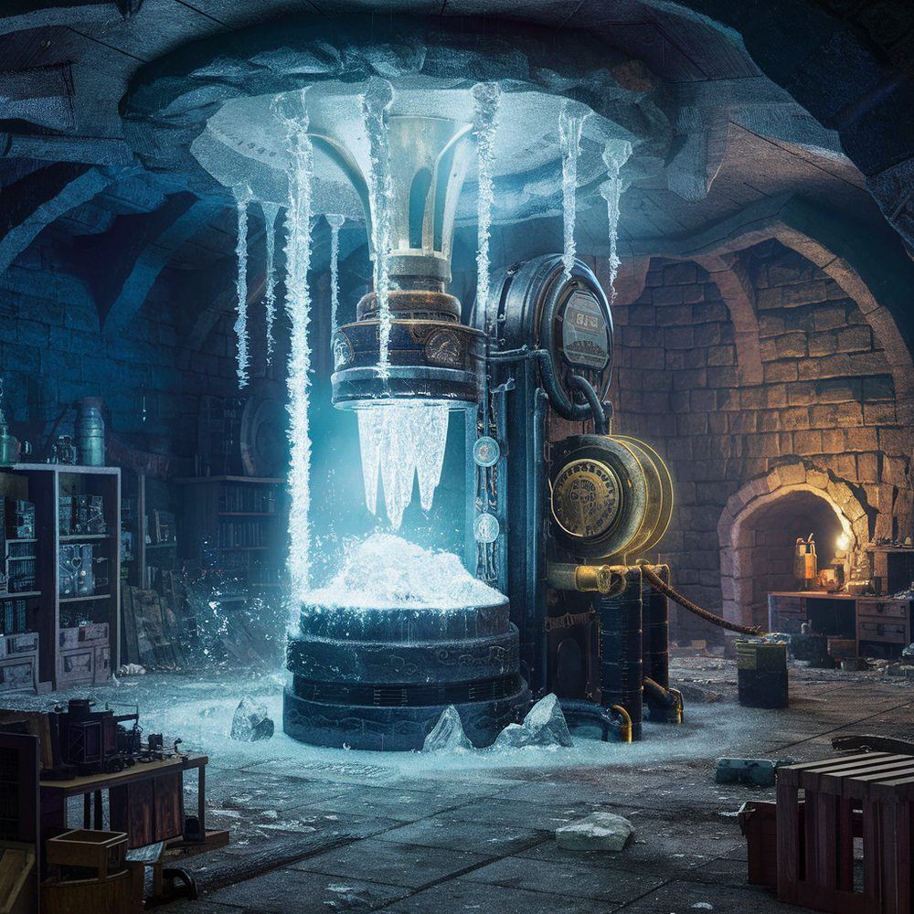

The Combine
Full name: The Combined Association for the Promotion of Fine Manufactures and Merchant Ventures
Values: Justice, Loyalty
Symbol: A cog, black on orange
Characteristic class: Artificer
The Combine is a multinational commercial cartel, originally dwarven, now multiracial. It is governed by a Board of Governors and a Director, with shares tradeable to an extent. Dwarven holds, guilds, and clans are major shareholders. Most employees are also shareholders, regarded as necessary for their loyalty, although there is some outsourcing at lower ranks.

Origins
The Combine began as a joint venture between several craft guilds of major dwarven holds. Traditionally, dwarven craftsmanship was always highly regarded, but the insularity of dwarven society (and their dislike of overland travel) meant they made little effort to export their wares. Dwarven exporters were at the mercy of human traders, who generally took most of the profits. The Combine was the dwarves’ attempt to bring the trading under their own control. It succeeded far beyond the dreams of its initiators.
In the process, it has sparked significant developments in dwarven society itself: production for export has become more common, dwarves have become more interested in the outside world, and a commercial mindset has become widespread. The Combine itself has become the major political player in the dwarven holds, more powerful than the dwarven lords themselves. This has led to tensions between insular traditionalists and outward-facing modernisers.
Other long-distance trading companies have been formed in League states in response, but the largest is only around a quarter of its size.
Current Leadership
A new Director has recently been elected — a gnome, the first non-dwarven Director. The current Director has information about a rumoured goblin super-weapon developed late in the Ashen Crusade which was never activated. As the search continues, the Director has become consumed with a lust for power.
Automata Programme
Of late, the Combine has made striking progress in the creation of magical automata for use in industry and war. This effort draws on the recovery and reverse-engineering of ancient goblin automata technology. The Combine’s efforts are largely clandestine — they wish to avoid rival bidders, and the technology is viewed with suspicion, especially given its goblin origins.
The Warforged Secret
What the rumoured goblin super-weapon actually refers to is the Warforged — intelligent automata created not to defend the goblins but to carry on goblin culture and values in the face of what they believed would be their total eradication. The Warforged were sealed in a vault beneath the mountains, set to open two thousand years hence when they would awaken. The vault is guarded by the Warden, a group of four Warforged left to stand watch over the sleeping host.
Finance
The Combine has made some inroads into finance through “contracts of investment and holding” which aim to mimic the effects of traditional money-lending in a religiously compliant way (lending at interest is a religious taboo for most races — goblin bankers traditionally filled this niche). However, the Combine must tread a delicate path to preserve its reputation as an honourable organisation.
Relations with Other Powers
- The League: Partners in the expansion of commerce, though League rulers worry about the subversion of secular power by a cartel with no territorial fixity. The League’s stable structure and legal apparatus (the Basilica) is considered essential for the kind of long-distance trade the Combine depends on.
- Old Dominion: Ideological opposition. The Combine regards the Dominion’s grip on the aristocracies of neighbouring realms as the single greatest obstacle to commercial expansion, and quietly funds merchant factions seeking to loosen it. The Dominion in turn regards the Combine as a solvent of the traditional order.
- Forest Kingdoms: Old enmity, grounded in deep disagreements over industry, mining, and above all tree-cutting.
- The Three: Seen as the potential link between the Lakelands and the wider world. The Three in turn see the Combine as useful but will not permit it much commercial freedom inside their borders.
- Dragons: Competition for gold and treasure.
- The Kin: Nuisance — criminals skimming money from the Combine’s operations.
Goals
Long-term: Global trading monopoly and the spread of prosperity.
Proximate: Acquiring, studying, and reproducing ancient goblin automata.
Timeline
The Combine is roughly 400 years old (comparable to the East India Company at its heyday, adjusted for longer dwarven lifespans).
See also
- Dwarves
- Goblins — the ancient automata technology the Combine seeks to recover
- Arrowmoor — a duchy contested between the Combine and the Old Dominion